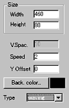
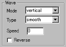
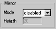
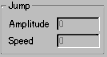
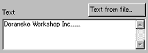
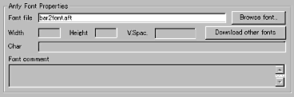

|
This applet displays a scrolling text, using colourful
fonts. The text can jump, and wave, and you may even be able to
add a mirror effect on bottom area. The coloured fonts are in AFT
(AnFy FonT) format. You can create your own aft fonts using a paint
program, otherwise download freely the AFT fonts collection from
here:
http://www.anfyteam.com/aft/
[For more technical
information about the available parameters, click here.]
Most parameters are self-explanatory and you can
always see brief description of each parameter by moving the mouse
pointer over the wizard.
 |
First, decide the applet size (Width, Height)
and the background colour. Then, set the applet's scroll
speed, which can be either vertical or horizontal at "Speed",
and the vertical positioning of the text as a length from
the top at "Y Offset", and a vertical spacing
in pixels at "V.Space" if available.
|
Note: Some parameters are available only when you
select a particular scroll mode at "Mode" parameter from
4 types of scrolls. i.e., horizontal, vertical, waving,
and jumping.
 |
If your choice is waving scroll,
the 4 parameters are activated shown to the left. Either vertical
waving or horizontal scroll is possible defined at "Wave
Mode". (Scroll type) |
Once, you have selected scroll type, then
you need to choose any one waving type from:
swing : long regular
sine
short : much irregular sine
long : a bit irregular sine
classic : short regular sine
smooth : fast irregular sine
halfsmooth : very fast irregular sine |
Then, place a number above 0 (if 0, no waving) at
"wave speed" parameter. You can optionally enable
reversed scroll mode.
 |
If you want, mirrored text mode
can be activated. Set the position of the mirrored text at "Height"
measured from the bottom. |
 |
If your choice of waving type has been "jump",
decide the amplitude and the speed of jumping. |

Now, enter a text in the text field. You may want to import a text
from any existing .txt file.

Finally, select your desired font (*.aft). This will automatically
load the font's information and display it as you see above. To
create your own .aft fonts, please read the readme.txt in the applet
folder.
Proceed to the
expert menu.
|